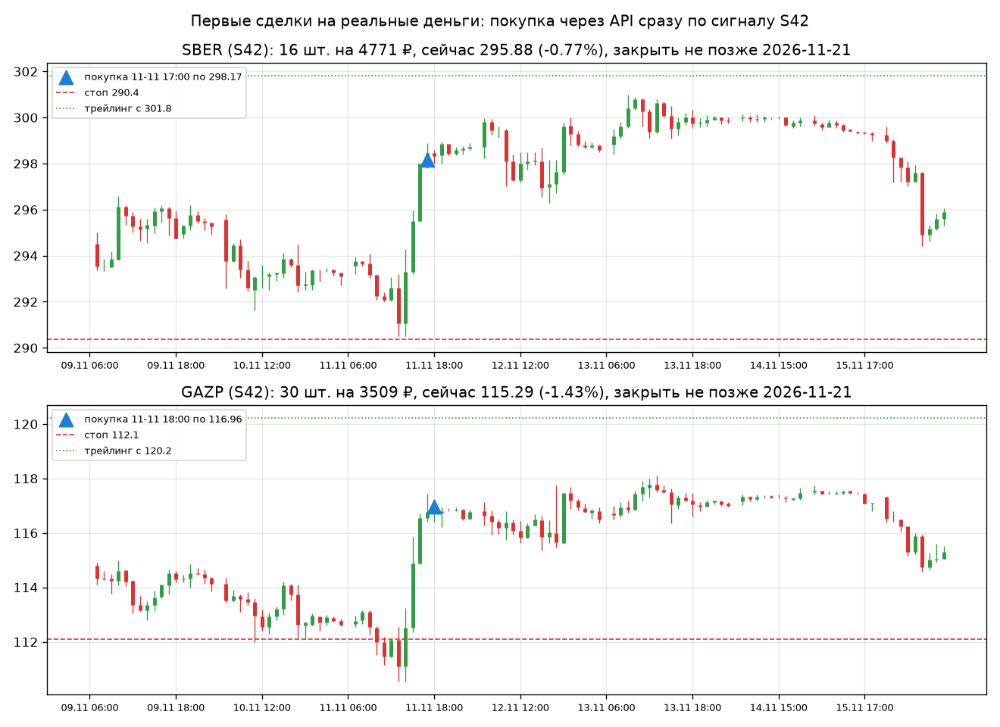
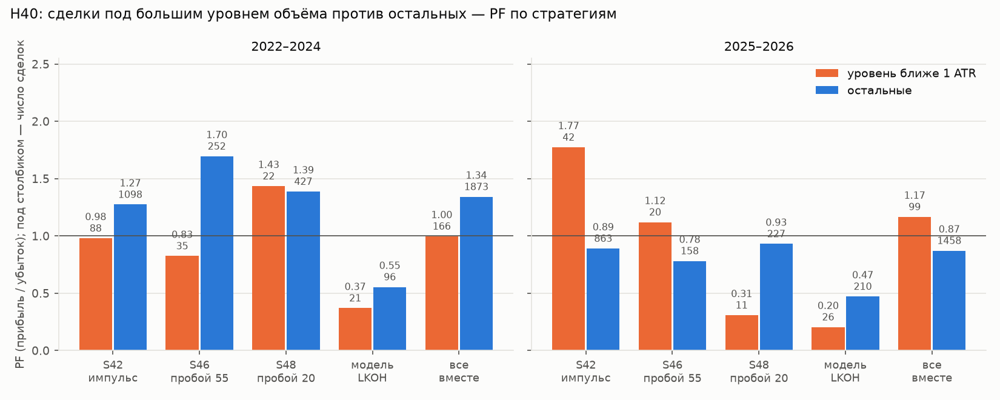
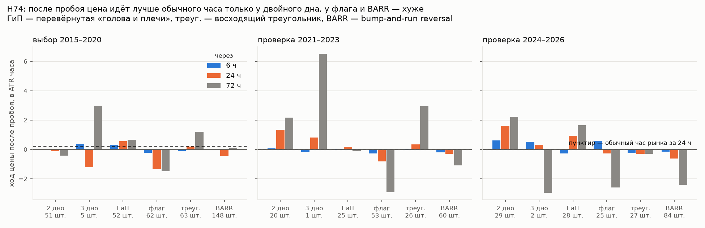
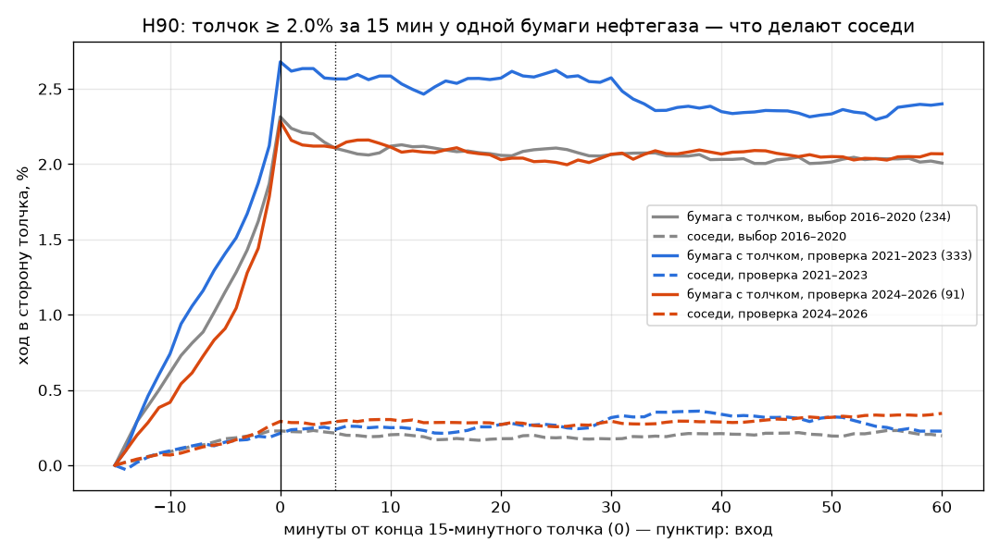
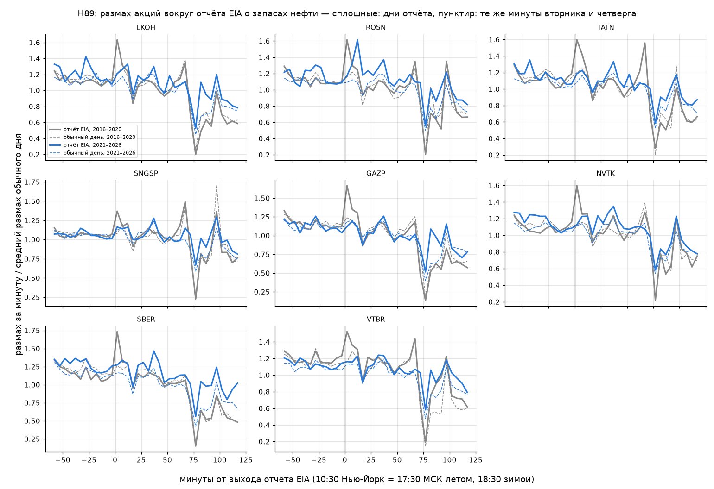

| дата | что | зачем |
|---|---|---|
| 10.11 | Созвон 37 мин: процесс проверки 2.0, уровни объёма — признак модели, а не сигнал; 9 задач Тимура | видеть, что именно проверено |
| 11.11 | Созвон 14 мин (календарь — «стопудовая фича», связь нефтегаза, резкие движения LKOH). Режим auto: S42 купил SBER и GAZP через API. Исправлена цена исполнения (бралась сумма заявки) | решение Дениса: открывать по сигналу автоматически |
| 12.11 | Созвон 5 мин: план и вопросы — в банке, подтверждает автор. Блок плана в банке, планы H40, H89, H90, задачи T62–T70. Лента Т-Инвестиций 21 акции → Диск (сертификат Минцифры) | своя лента сделок после 06.04.2026 |
| 13.11 | Обход банка: облачная задача (банк) ↔ ветка bank-sync ↔ сервер (данные и расчёт), будильник с сервера | банк виден только из облака, данные — только на сервере |
| 14.11 | Приложение Claude на GitHub — цепочка заработала. Стакан 21 акции раз в 15 с → Диск. Часовой кеш 19 акций, образцы графиков, «зёрна» в банке, H91–H93. H40 — нет | копить данные о заявках вместо покупки архива |
| 15.11 | Тимур подтвердил планы H74, H89, H90 | можно считать |
| 16.11 | H74 посчитана сервером (ждёт оценки на глаз), страница H84 обновлена, H90 — нет, H89 — первый заход по нефти, график реальных сделок, проверка стакана | итоги недели к отчёту |
S42 · SBER: сигнал за час 17:00 → куплено через API в 17:00:57 по 298.17 (контур 298.00, +0.06%). GAZP: 18:00:27 по 116.96 (+0.17%). Стопы и трейлинг стоят у брокера. Сейчас SBER −0.77% (−37 ₽), GAZP −1.43% (−50 ₽); закрыть не позже 21.11.

Сделки стратегий на живых данных с 24.10 против бэктеста тех же стратегий на тех же бумагах (2021–2026). Сверка каждый день решает: «в норме», «внимание» (p < 5%) или «стоп» (p < 1%).
| стратегия | сделок | средняя, % | в бэктесте, % | сумма, % | p | статус |
|---|---|---|---|---|---|---|
| S42 (счёт) | 3 | −2.36 | +0.40 | −7.1 | — | мало сделок |
| S46 пробой 55 дней | 8 | −0.41 | +0.36 | −3.3 | 0.30 | в норме |
| S48 пробой 20 дней | 11 | −2.28 | +0.32 | −25.1 | 0.001 | стоп |
strategy_stop.json).bank-sync3596 сделок S42, S46, S48 и модели LKOH за 2022–2026: PF 1.06 под уровнем против 1.13 у остальных, знак разницы меняется от половины к половине у всех трёх стратегий, перестановочный тест p = 0.74. У 73% входов большого уровня по ходу вообще нет — стратегии входят на пробое, выше накопленного объёма.

Дневные свечи 19 акций, 2015–2026. Книжные пороги почти пусты (флаг «+90% за 1–2 месяца» — 3 случая за 11 лет). На ослабленных порогах — 762 фигуры, 381 на выборе и 381 на проверке. Двойное дно: +2.2 ATR за 72 ч в обеих половинах проверки; флаг и bump-and-run — заметно хуже обычного часа.

docs/results/h74_patterns/patterns.html) — кнопки «фигура / не фигура», по плану нужно ≥ 80% «фигура». Код Тагира на сервер не попал — сравнить разметки, когда пришлёт.

| кто | гипотеза | что нужно |
|---|---|---|
| Тимур | H74 подбор разметки фигур | оценить 208 примеров на странице (вместе с Тагиром) |
| Тимур | H39 обучение на размеченных ситуациях и фигурах | 4 вопроса к плану; после H74 — какие фигуры брать |
| Тимур | H64 обучение на нейросети | план продолжения, 3 вопроса |
| Тимур | H78 следовать за трейдерами: Telegram, Пульс, портфели | 4 вопроса: какие каналы, как отбирать |
| Тимур | H93 «таблица поводырей»: держат ли уровни трейдера | 3 вопроса по таблице ссылок 12.11 |
| Тимур | H87 «ширина импульса» (скептик к H09) | план продолжения: досчитать на свежих данных? |
| Денис | H91 резкие движения: что отличает продолжившиеся | 3 вопроса к плану |
| Денис / Тагир | H92 резкие движения и режим рынка до и после 2022 | 3 вопроса к плану |
| что | где |
|---|---|
| H40 — сделки под уровнем объёма | docs/results/h40_trades.md |
| H74 — разметка фигур, страница для оценки | docs/results/h74_patterns.md, h74_patterns/patterns.html |
| H90 — соседи по сектору | docs/results/h90_sector.md |
| H89 — календарь, нефть | docs/results/h89_oil.md, даты отчётов EIA — data/calendar/eia_wpsr_releases.csv |
| Реальные сделки, сверка | docs/results/weekly/2026-11-16/live_trades.*, reports/live/deviation.md |
| Процесс 2.0 | scripts/queues/bank_round*.{sh,md}, ветка bank-sync |
| Лента и стакан | Яндекс Диск: forexmodel/лента Т-Инвестиций/, forexmodel/стакан/ |
| Журнал экспериментов | docs/experiments/catalog.yaml (раздел no_log) |